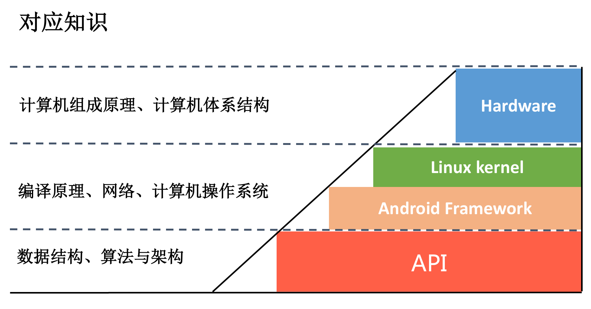
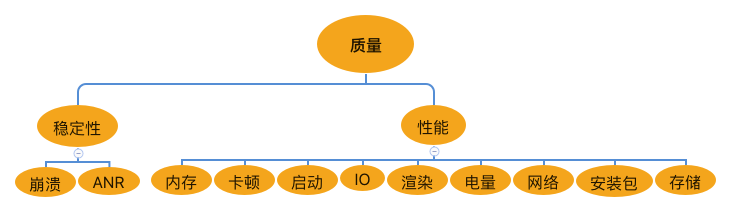
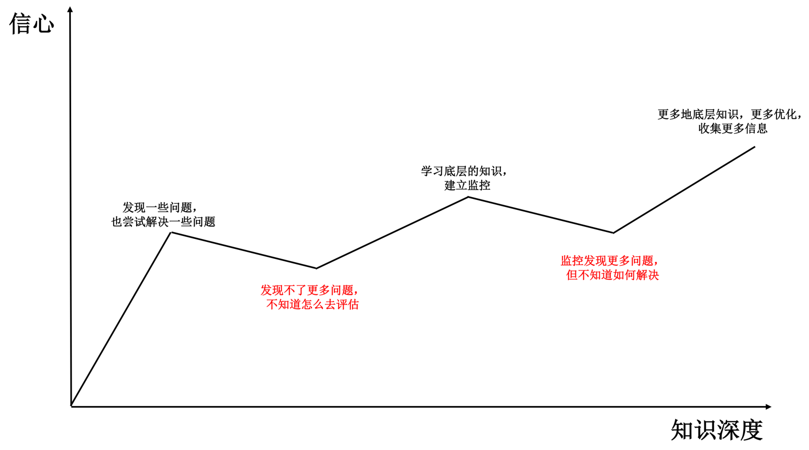

专栏上线已经两个多月，模块一“高质量开发”也已经更新完毕，你掌握地如何呢？我知道有不少同学一直随着专栏更新积极学习、认真完成课后的练习作业，并且及时给我反馈，作为专栏作者我很欣慰。
但也有不少同学表示很难跟上专栏的进度，似乎对“如何成为 Android 开发高手”感到更加迷茫也更困惑了。“这个专栏实在是太难了！”“我日常工作根本用不上这些知识！”“我应该怎样做才能更好地学习这个专栏？”。太难了、工作用不到、想学但是又不知道从何入手，这是我听到同学们反馈最多的三个问题。
今天既然是专栏“模块一”的答疑时间，那我就来解答这三个问题，力求帮助迷茫的你拨开云雾，找到通向 Android 开发高手之路。
前几年在业务红利期，Atlas、Tinker、React Native、Weex、小程序大行其道，我们的应用程序堆积了各种各样的框架以及无数的业务代码。当现在需要出海东南亚，需要下沉到三四线城市时，在面对各种低端机和恶劣网络条件的时候，再猛然回头一看，会发现原来我们已经欠下了如此恐怖的“技术债”。
如果想成为一名开发高手，只做好需求是远远不够的，还需要有系统性解决应用性能和架构问题的能力。而这些问题本来就是很复杂的，可能对于一些同学来说解决复杂问题会感到很难，但你要成为高手，就一定要具备解决复杂问题的能力。下面我就先来谈谈这个专栏真的这么“难”吗？
问题一：这个专栏太难了？
性能优化就像一个坑，你永远不知道自己跳进去的坑有多深 。
在过去几个月，我一直在填“启动优化”这个坑，也对这句话有了更深的感触。
-
业务优化：应用层。开始的时候通过业务代码的优化，我很轻松地就把启动速度优化了 50%。但正如《大停滞》所说的，这只是摘完了“所有低垂的果实”。之后很快就陷入了停滞，就像冲进了一条漆黑的隧道，不知道还可以做哪些事情，很多现象从表面也不知道如何解释：I/O 有时候为什么那么慢？线程的优化应该怎么样去衡量？
-
Android Framework：系统框架层。为了冲出这条漆黑的隧道，我去研究了 Android 的内存管理、文件系统、渲染框架等各个模块；学习如何去优化和监控 I/O、线程、卡顿以及帧率，建立了各种各样的性能监控框架。为什么我对监控如此重视？这是因为对于大厂来说，“挖坑容易，填坑难”，几十上百人协同开发一个项目，我们不希望只是解决具体的某一个问题，而是要彻底解决某一类问题。但想要实现一个监控框架，前提是需要对 Framework 有非常充分地理解和研究。
-
Linux Kernel：内核层。再深入下去，我还需要利用 Linux 的一些机制，例如 ftrace、Perf、JVMTI 等。在做 I/O 的类重排、文件重排评估的时候，还需要自己去修改内核的参数，去刷 ROM。
-
Hardware：硬件层。高端机和低端机的硬件差异究竟在哪里？eMMC 闪存和 UFS 闪存的区别是什么？除了更加了解硬件的性能和特性，到了这个阶段我还希望可以向手机厂商和硬件厂商要性能。例如高通的CPU Boost、微信的 Hardcoder、OPPO 的开放平台等。

启动优化的过程，就像是一个知识爬坡的过程。我们不停地尝试往底层深入，希望去摘更高的果实。那再回到你疑惑的问题：这个专栏难不难？难，因为它试图为你从上往下拆解整个知识架构。
坦白说，现在很多移动开发工程师更像是 API 工程师，背后的数据结构、算法和架构相关的知识是不达标的。这个时候如果想往底层走，就会感觉步步艰辛。但是上层的 API 很容易被 Deprecated，即使你对 Android 的所有 API 倒背如流也无法成为真正的开发高手。这样的你，即便以后把 Android 替换成 Fuchsia，你也还只是一个 Dart API 工程师。
相反越底层的东西越不容易过时，假如我们以后面对的不是 Linux 内核的系统，比如 Fuchsia OS，也可以根据已经掌握的系统知识套用到现有的操作系统上，因为像内存管理、文件系统、信号机制、进程调度、系统调用、中断机制、驱动等内容都是共通的，在迁移到新的系统上时可以有一个全局的视角，帮助你快速上手。
因此我希望 5 年后再回头看这个专栏，它依然不会过时。所以从知识的深度来看，这个专栏的确难。那从知识的广度来看呢？

崩溃、内存、卡顿、I/O、渲染、网络…这个专栏涉及的知识的确非常多，而且这个专栏也只能提纲挈领，还需要你花时间去补充文章里给你链接的更多知识。
所以说无论从知识的深度还是广度来看，专栏的确算是比较难。那这个专栏究竟有多难呢？可以说超越了大多数腾讯 T3 或者阿里 P7 的水平。如果你还没到达这个级别，看不懂是正常的，因为大部分内容 BAT 的工程师第一遍可能也看不懂。
把这个专栏写“难”，并不是因为我想炫技，而是成为一名真正的 Android 开发高手本来就没有想象得那么容易。只有看到差距才有前进的动力，2019 年你需要真正迈出走向高手的第一步。
问题二：专栏所讲的工作上用不到？
我一直只是做业务，没有机会接触性能。对于这个专栏，我更期待可以对日常工作有帮助的内容。
正如我上面所说的，之所以选择写这些内容，是因为它们是移动开发高手所必须掌握的。如果我告诉你 MAT 怎么用、Profiler 怎么用，或者告诉你如何去写界面，或许这些内容对你日常工作能有帮助，但仅仅这些你依然不可能成为一名 Android 的高手。
这个专栏目希望可以提高你的个人能力，帮助你成长，或许不一定与你当前的工作完全契合，那这个问题怎么解决呢？我认为完全不需要等着别人给你安排，我们在完成工作之余，可以尝试去解决一些应用性能和架构的问题，又或者是团队效率的问题。
这样你工作上的表现也会超出上级的预期，并且可能以后这些高级问题大家都会来咨询你。同事对你建立了信任，这些事情以后可能就都由你负责了，你也成为了大家心目中的“开发高手”。
当然如果你认为目前的平台对未来的发展制约太多，那这个专栏同样也是你去面试大厂的一块非常好的敲门砖。
“打铁还需自身硬”，专栏里很多内容大厂面试官可能也不熟悉，我专栏里讲的很多问题其实大厂目前做得也都不很完善。在专栏中，我会力求去分析腾讯、阿里、头条、Facebook、Google 等国内外大厂目前遇到的问题、尝试解决的方案，以及未来优化的方向。希望可以扩宽你的视野，帮你知道大厂在玩什么、他们都在意什么，因为这些对于面试来说也非常重要。
虽然这个专栏涉及那么多的内容，但毕竟我们不可能每一项都精通。之前我在一篇文章曾经讲过微信的 T 型人才理论，说的是微信在面试时，不会问你 Android 和 iOS 的 API 怎么使用，而是希望候选人在某一个领域研究得特别牛、特别深入，并且是可以打动面试官的。这意味着如果你在某一个领域证明过自己，那微信也会愿意在其他领域给你机会。这里我推荐你看看《谈谈腾讯的技术价值观与技术人才修炼》这篇文章。
不夸张地说，LeetCode 适量刷题，加上这个专栏知识的广度，如果再找其中一两个知识点更加深入地研究，这样的话进入大公司是不会有太大问题的。
问题三：这个专栏应该怎么学习
我工作用不上，平时还那么忙，应该怎么去学习这个专栏呢？
如果专栏的学习可以跟我们的工作紧密结合在一起，的确是一个非常理想的情况。但是即使是理想情况，关键也还是要靠个人的自驱力。
在极客时间的年终总结里，看到一句话特别有感触：“2018 年买了 32 个专栏，完成了开篇词的学习”。这个专栏应该怎么学？你首先应该抛弃焦虑，无所畏惧地往前冲。
既然腾讯 T3 或者阿里 P7 都会觉得难，如果看不懂真的不要气馁，也不要焦虑，可以结合参考资料慢慢看。因为专栏一直都在，可以按照自己的节奏来学习，甚至可以用 2019 年一整年的时间来“死磕”它，但千万不要放弃。
还记得当初你在专栏“导读”里立下的 flag 吗，你可以利用这个专栏好好地将知识架构补充完整。我们的基础能力提升了，未来无论是大前端还是 Flutter 都会有用武之地，也就更加无需担心 Android 系统是否会被颠覆。
这个专栏应该怎么学？我给你的第二个建议是多看、多想、多实践。看再多的文章，不去思考文章所讲的内容和意图也是没用的；思考再多，不去动手真正实践也是没用的。
正因为实践这么重要，所以我在写专栏时才会把大量的时间花在 Sample 上面。想想现在有那么多的开源项目，可能我们只是调用 API 或者提一两个 issue，并不算是真正使用。想要真正用好开源项目，需要你去研究内部的机制，思考作者的意图。只有在认真研究之后，我们才能发现优化的空间。
在学习专栏时，我建议可以先挑一两个知识点开始深入学习。如果你觉得崩溃相关的内容比较困难，可以先略过，等学习完其他知识后再回头来看，肯定会有不一样的体会。

我们的学习过程也是一个树立信心的过程，可能在某几个阶段会感到煎熬，但是只要你攀登上去了，一切都会柳暗花明。
另外，专栏的很多文章我喜欢用演进的思路去讲，比如耗电的演进、渲染的演进、Android Runtime 的演进等。同样的，你成为高手的道路应该也是不停向前演进的，可能刚开始时不一定是最好的，但是只要方向是正确的，终究可以到达“高手”这个终点。
最后，也是我反复强调过的，专栏的学习还需要结合大量的背景知识和外部资料，推荐的书籍你可以参考《专栏学得苦？可能你还需要一份配套学习书单》。
总结
今天我们一起来定一个“小目标”也不迟：按照专栏给出的方向尝试一下、努力一下，走向通往 Android 开发的高手之路。
未来移动开发无论是变成大前端还是 Flutter 的世界，性能、效率和架构都是永恒不变的主线。今天我们在 Android 开发打下的坚实基础，未来也会帮助我们更好地理解和深入新的开发模式或者新的系统。崩溃、内存、存储、渲染、I/O、网络…这些知识以及它们背后的底层原理依然还是非常重要的。对于其他领域也是如此，一个前端开发工程师不能只知道 HTML、CSS 和 JS 语法，还需要知道它们编译的原理、浏览器实现的原理以及底层的渲染机制等。
最后我想说一个人学习可能会比较孤独，如果可以找到更多志同道合的朋友一起学习，效果可能会更好。正如很多开发所提倡的结对编程，推荐你看看《两位拯救谷歌的超级工程师的故事》。除了结对编程的范例之外，文中有一段话对我的触动也非常大。
Jeff 与 Sanjay 对于计算机的工作原理非常熟悉，能够立足 bit 层级进行思考。Jeff 曾经整理出一份《每位程序员都应该了解的那些延迟数字》清单。虽然名为“每位程序员都应该了解”，但大多数从业者对这些数字其实非常陌生——例如一级缓存引用通常需要半纳秒，或者从内存中顺序读取 1MB 大概需要 250 微秒等等。但这些数字已经直接烙进了 Jeff 与 Sanjay 的大脑当中。凭借着他们对谷歌核心软件的多次重写，该系统的容量已经提升至新的数量级。
2019 年已经过去将近 1/6 了，今年你定的目标完成得怎么样了？还有哪些学习计划？有什么感受想跟其他同学分享吗？欢迎留言跟我和其他同学一起见证你的成长。
COMMUNITY NOTES
读者评论
极客时间最有价值课程
我曾今花过6000买的课程都不如这98块钱的课，这是我买过价值及含金量最高的课程了
向文绍看齐 小P6一枚
有没有和我一样的小伙伴专栏买了还没怎么看的，总是觉得今天太忙就算了来安慰自己真是惭愧啊，2019一定好好好学习天天向上！
“那这个专栏究竟有多难呢？可以说超越了大多数腾讯T3或者阿里P7的水平。”这个句话拯救了我崩溃的小心脏。
这个专栏真的很难 但是真的学会了 帮助会真的很大 谁能想过安卓开发可以水深到这样呢
老师的知识广度，深度和文章的叙述思路真让我佩服，我这位cd-rom必须write一下留言支持一下才行。
首先收回我上次无理的评论（还好没放出来）。最近一有空就在看课程，很多课程都看了好几遍。第一遍感觉很难，多看几次，多动手练习后就慢慢有感觉了（当然还是觉得难）。大佬就是厉害，干货满满，膜拜下~~等我学顺手了一定推荐给其他同学
目前看过最好的安卓专栏了。专栏确实难，我在学习启动优化和崩溃的时候就知道了，这个专栏是个长期的攻坚战，这么一想难度也就可以接受了，一篇有质量的文章，抵得上十篇知识点泛滥的文章。第一遍确实不懂，看了几遍后，好多了。
刺激，喜欢。
请问老师，后台线程保活需要了解哪些知识呢
请问我想研究dex格式，resources.arsc格式，apk build流程，需要先熟练c++语言吗？个人感觉android中太多用得着C++得地方，特别是PLT hook方面，每次看到PLT就看不懂了。
极客时间最有价值课程
看了一部分看不下去了 扩展视野极好 然后 再慢慢看吧 早睡早起看绍文
看了这篇文章， 更加坚定了我当初的学习策略。我先把专栏读薄，有一个总体的概念，然后再准备把专栏读厚，如此反复阅读，相信我可以的。即使现在更多的专注于Java，但是Android很多思想，和Java还是相通的，就如文中说的一样，很多东西变化了没关系，核心东西是永恒不变的，感谢邵文老师在我的迷茫阶段出了这篇文章，及时锁定我学习的方向和方法。
后悔看到晚了，感觉以前用的ANDROID都跟小学生水平是的。感谢绍文给了一个更高的认识
深刻看过太过的视频教程也就是一看而过可能学的是一门技有感：技精成匠 悟道称师！感谢！
去年买的课程，今年才想起来原来还有这么好的东西，天天被业务和一些乱七八糟的东西搞的忙死了，都没有时间学习
确实有难度，贵在坚持，勉励自己
如果把人的认知和思维想象为一个金字塔 我觉得 学习专栏 算是金字塔比较底层的模块 金字塔上层应该是 我们的认知框架 思维方式或解决问题的方法理论 这个能力是可以横向迁移的 所以要想成为一个厉害的人 先从学习专栏开始！